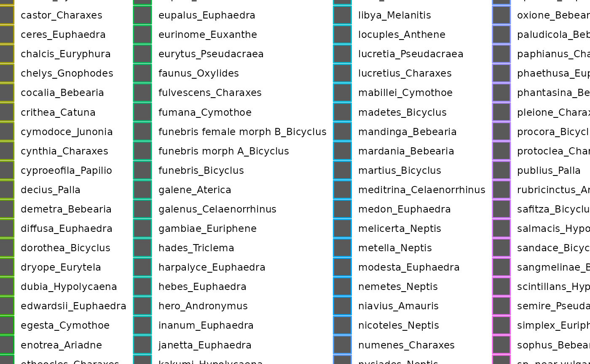
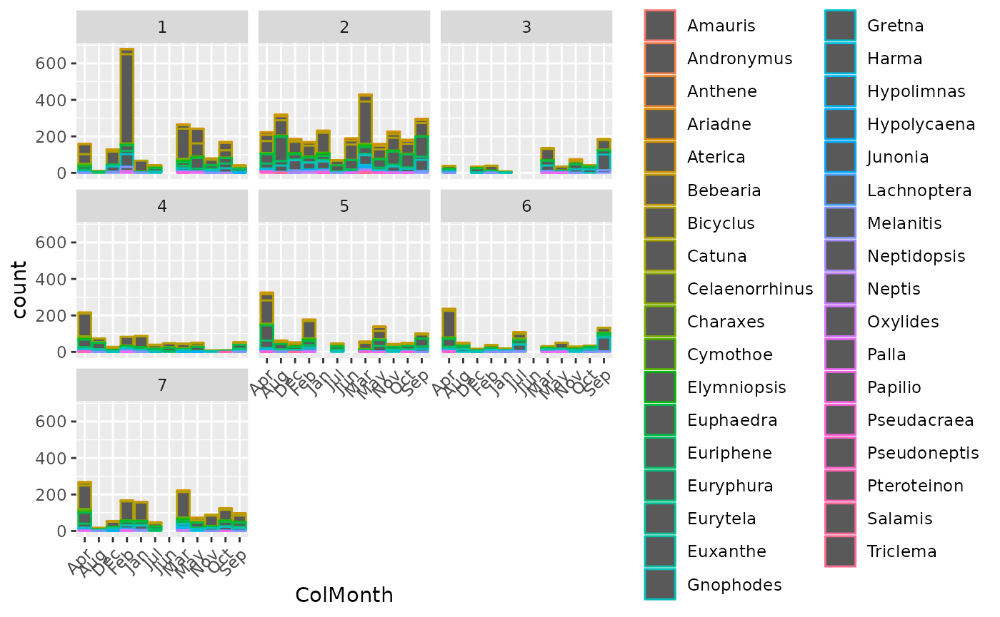
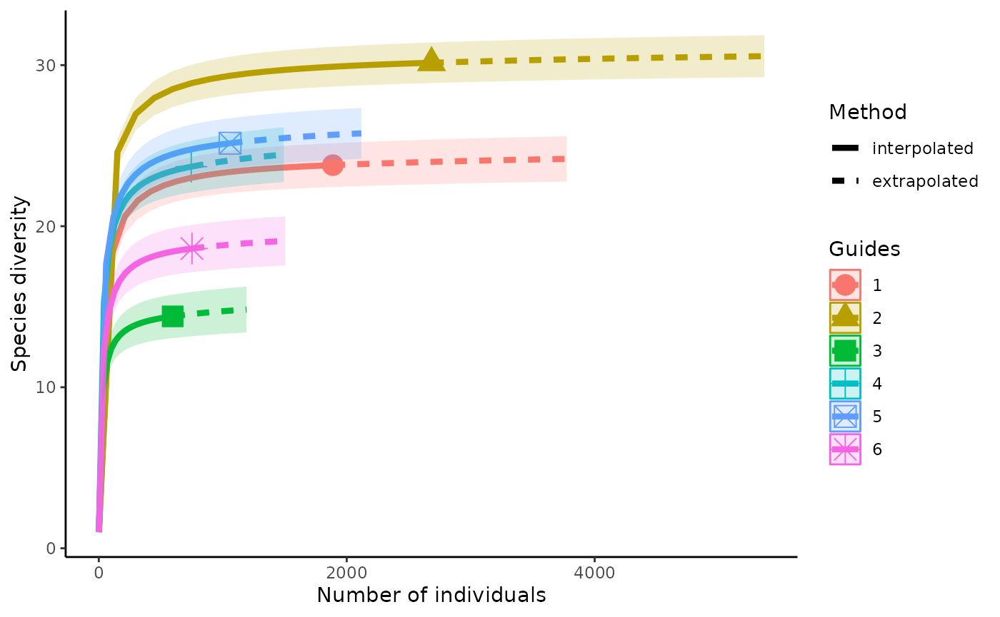

R_package_Dede_tutorial.RmdWhat to load in:
## ── Attaching packages ─────────────────────────────────────── tidyverse 1.3.1 ──## ✓ ggplot2 3.3.5 ✓ purrr 0.3.4
## ✓ tibble 3.1.6 ✓ dplyr 1.0.7
## ✓ tidyr 1.1.4 ✓ stringr 1.4.0
## ✓ readr 2.1.0 ✓ forcats 0.5.1## ── Conflicts ────────────────────────────────────────── tidyverse_conflicts() ──
## x dplyr::filter() masks stats::filter()
## x dplyr::lag() masks stats::lag()## Loading required package: usethis## Registered S3 method overwritten by 'hoardr':
## method from
## print.cache_info httrYou might need to install diversity indices packages:
install.packages("ecolTest")## Installing package into '/tmp/RtmpetTbgn/temp_libpath37813597656'
## (as 'lib' is unspecified)Now we insall my package:
devtools::install_github("colebeeaffinis/R_package_Dede")## Using github PAT from envvar GITHUB_PAT## Downloading GitHub repo colebeeaffinis/R_package_Dede@HEAD##
checking for file ‘/tmp/RtmpEYMvfD/remotesfba798c6460/colebeeaffinis-R_package_Dede-3513ffe/DESCRIPTION’ ...
[32m✓
[39m
[38;5;247mchecking for file ‘/tmp/RtmpEYMvfD/remotesfba798c6460/colebeeaffinis-R_package_Dede-3513ffe/DESCRIPTION’
[39m
[36m
[39m
##
[38;5;247m─
[39m
[38;5;247m
[39m
[38;5;247mpreparing ‘Diverse’:
[39m
[36m
[39m
##
checking DESCRIPTION meta-information ...
[32m✓
[39m
[38;5;247mchecking DESCRIPTION meta-information
[39m
[36m
[39m
##
[38;5;247m─
[39m
[38;5;247m
[39m
[38;5;247mchecking for LF line-endings in source and make files and shell scripts
[39m
[36m
[39m
##
[38;5;247m─
[39m
[38;5;247m
[39m
[38;5;247mchecking for empty or unneeded directories
[39m
[36m
[39m
##
[38;5;247m─
[39m
[38;5;247m
[39m
[38;5;247mlooking to see if a ‘data/datalist’ file should be added
[39m
[36m
[39m
##
[38;5;247m─
[39m
[38;5;247m
[39m
[38;5;247mbuilding ‘Diverse_0.0.0.9000.tar.gz’
[39m
[36m
[39m
##
## ## Installing package into '/tmp/RtmpetTbgn/temp_libpath37813597656'
## (as 'lib' is unspecified)Lets download and read in data for the package:
download.file("https://raw.githubusercontent.com/colebeeaffinis/R_package_Dede/master/data/Ghana_Butterfly_Data.csv","/cloud/project/data/Ghana_Butterfly_Data.csv")
gbutterflies<-read_csv("/cloud/project/data/Ghana_Butterfly_Data.csv")## Rows: 9049 Columns: 11## ── Column specification ────────────────────────────────────────────────────────
## Delimiter: ","
## chr (5): SampleCode, Genus, Species, Sex, ColMonth
## dbl (6): UniqueNo, ColDay, ColYear, TRANSECT, TRAP, Site##
## ℹ Use `spec()` to retrieve the full column specification for this data.
## ℹ Specify the column types or set `show_col_types = FALSE` to quiet this message.We can start with some data clean up. It is general practice to put genus and specific epithet name in separate columns when recording data. This usually allows for a cleaner and more flexible dataset when processing data.
However, for this example, we want to process the scientific species name as a whole. To do this we will merge our Genus and Species columns.
We should get an output of a dataset with these two columns now one column called ScientificName.
A good way to analyze this type of collection data across several sites is comparing frequencies between sites. We can plot out the species frequencies for each specific site in a faceted plot.
For insects, in this case butterflies, seasonality is incredibly important in determining what species are out. Our assemblage in the same site may look different in May then it does in August. We can account for this by plotting Species frequencies by month in each of site facets.
breakout_hist(mgbutterflies,ColMonth,ScientificName,Site)## Warning: Ignoring unknown parameters: binwidth, bins, pad We should get a ggplot of 7 different graphs with month on our x axis. We have a lot of different species in this data set so we will get quite a big legend and a lot of different colors for all the species.
We could also use Genus instead of its species name to cut down on the amount of data we are plotting to hopefully be able to visualize the data better. For this we will use the Genus column of the gbutterflies dataset before we merged to columns.
breakout_hist(gbutterflies,ColMonth,Genus,Site)## Warning: Ignoring unknown parameters: binwidth, bins, pad We should get an only slightly less overwelming faceted histogram of genus frequencies by month for each site.
As you can see, when you have a lot of species to work with, it could be difficult to visualize the diversitys of different sites and compare them on a ggplot. We can make the comparisons easier by using diversity indicies like Shannon’s Diversity Index or Hutcheson-T Test.
First we have to do some data prep to be able to plug the right stuff into these indices.
prepped_data<-shan_hutch_prep(mgbutterflies,Site,ScientificName)This should give us a dataset of abundances for each of our sites.
Shannon’s Diversity Index looks at the diversity of each site taking into account abundance of species. A high Shannon’s diversity number means there is a high diversity, or there is a large variety of species. A low Shannon’s diversity means the plot has few species, or a low diversity.
We can plot the Shannon’s diversity for each site to compare.
shannons_index(prepped_data) We should get a # of individuals vs. diversity plot with a line for each site. If the dot is in the low right corner, then that site was dominated by a lot of one species. If the dot is in the top right, the site had a high diversity where each individual was a new species.
If we are seeing two sites that are showing interesting differences, we can focus in and compare Shannon’s diversity for just two sites with a Hutcheson-T Test. This allows us to test the statistical significance of the difference in Shannon’s diversity.
Lets say sites 1 and 3 are showing some interesting differences and we want to see if this is significant.
hutcheson_t(prepped_data$'1',prepped_data$'3')## Warning in Hutcheson_t_test(x = {: missing values in x and y replaced with
## zeroes##
## Hutcheson t-test for two communities
##
## data: { , { { , { sample1 , sample2 } , }} , }
## Hutcheson t-statistic = 8.5978, df = 1079.4, p-value < 2.2e-16
## alternative hypothesis: true difference in H' is not equal to 0
## sample estimates:
## x y
## 1.376403 1.158361We should get a list of values. The p-value is the what we want to look at. If p is less then .05, then that difference in Shannon’s diversity is significant.
We may also want to see how different species are related to each other using phylogenetic trees.
For my specific project, I will be working with many different species of carnivorous plants. It is important to understand the relationship between these different species. Lets say I am working with four species of carnivorous plants and want to see how they are related.
species<-c("Pinguicula lutea","Sarracenia alata", "Drosera tracyi","Pinguicula pumila")
carnivorous_tree(species)##
Progress [----------------------------------] 0/39 ( 0%) ?s
Progress [================================] 39/39 (100%) 0s
## Warning in collapse_singles(tr, show_progress): Dropping singleton nodes
## with labels: asterids ott1008294, mrcaott248ott320, lamiids ott596112,
## mrcaott248ott979274, mrcaott248ott26035, mrcaott248ott1191, mrcaott248ott2108,
## Lamiales ott23736, mrcaott248ott11341, mrcaott248ott55259, Core_Lamiales
## ott5263556, mrcaott248ott1016, mrcaott1016ott25224, mrcaott1016ott1452,
## mrcaott1452ott5046, mrcaott5046ott29652, mrcaott5046ott10430, Lentibulariaceae
## ott659713, Ericales ott648892, mrcaott650ott5936, mrcaott650ott8984,
## mrcaott650ott891, mrcaott891ott3582, mrcaott3582ott32213, mrcaott3582ott9475,
## mrcaott9475ott11591, mrcaott9475ott14371, Sarraceniaceae ott639961,
## Sarracenia ott639943, mrcaott336666ott570373, mrcaott336666ott570361,
## mrcaott336666ott570358, mrcaott557ott67236, Caryophyllales ott216628,
## mrcaott2492ott6468, mrcaott6468ott67241, mrcaott6468ott14957, Droseraceae
## ott14966, Drosera ott14968## [1] "Error-tips-found"We should get a plotted phylogenetic tree of all four species.
We can also do this with some species from our data set
bfspecies<-c("Amauris niavius","Amauris tartatea","Andronymus hero","Anthene locuples","Pseudoneptis bugandensis","Salamis cacta","Triclema hades")
carnivorous_tree(bfspecies)##
Progress [----------------------------------] 0/41 ( 0%) ?s
Progress [================================] 41/41 (100%) 0s
## Warning in collapse_singles(tr, show_progress): Dropping singleton nodes
## with labels: mrcaott677ott9938, mrcaott677ott2248, Nymphalidae ott358161,
## mrcaott8214ott8719, Limenitidinae ott159298, Pseudoneptis ott917186, Danainae
## ott956921, Danaini ott253975, Danaina ott774831, mrcaott12735ott103660,
## mrcaott12735ott24977, mrcaott12735ott28039, mrcaott28039ott31514, Nymphalinae
## ott809887, mrcaott28039ott125890, mrcaott28039ott47978, mrcaott47978ott54444,
## mrcaott47978ott73085, mrcaott73085ott193816, Junoniini ott775979, Salamis
## ott679786, mrcaott2980ott6188, mrcaott6188ott69794, mrcaott6188ott103670,
## mrcaott6188ott6195, mrcaott6188ott855018, mrcaott6188ott84028,
## mrcaott6188ott6833, mrcaott6188ott7874, mrcaott6188ott128114,
## mrcaott6188ott31414, mrcaott6188ott37345, mrcaott6188ott90836,
## mrcaott6188ott20861, Anthene ott846638, Triclema ott3148610, Hesperioidea
## ott336117, Hesperiidae ott336118, mrcaott3236ott18591, mrcaott3236ott8711,
## Andronymus ott147150## [1] "Error-tips-found"